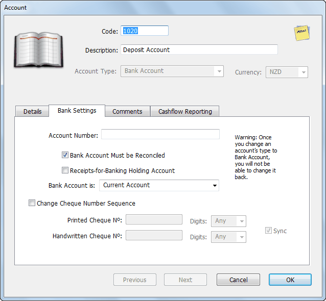
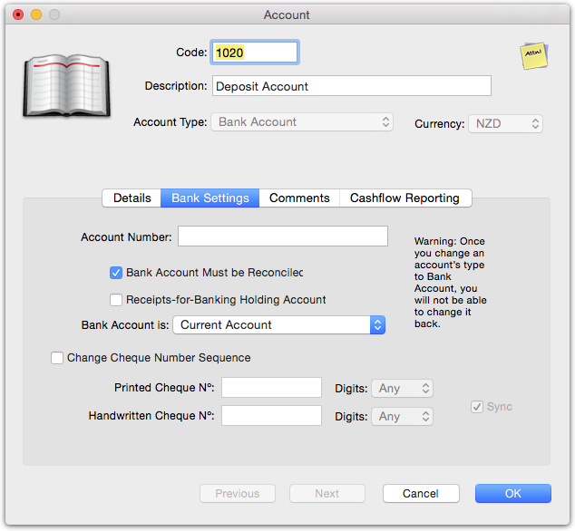
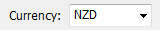
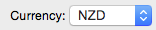
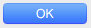
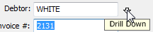

MoneyWorks Manual
Anatomy of an Entry Window
Entry windows are customised for different types of information. However many features are common to all windows.


Field
A field is where information from the record is displayed or can be entered. Pressing the tab key will move you from one field to the next in the window. If you hold down the shift key and press tab, you will move to the previous field. You can also move directly to a field by clicking on it.
Certain fields have limits on the information that you can enter. For example, you can only enter a valid account code into a field that requires an account code. When you leave such a field (either by tabbing, clicking in another field or clicking a button), MoneyWorks checks on the information that you have entered. If this is found to be incorrect, an alert of some sort will be displayed—for fields requiring a code identifying another record (such as a Product code), this will be a choices list —see Entry and Validation where a Code is Required. You will not be able to leave a field if it contains invalid information.
Note: Most entry screens are non-modal (i.e. you can have more than one open at a time). However in Windows, if you maximise your windows, the entry screens will be modal.
|
 |
 |
| Pop-up menu or combo-box (Windows) | Pop-up menu (Mac) |
To set the value in a pop-up menu (also known as a “Combo Box” on Windows) either click or tab into the menu. To select the item you can:
- click on the item
- use the up and down arrow keys to select the item
- type the first letter of the item

Check Boxes : These are used to represent options that are either on or off.
When the check box is ticked the option is on. Clicking on the check box will change the value.

Radio Buttons: These are used to represent mutually exclusive options. When one is set, the others in the same group will be automatically reset.
Acceptance Buttons: Use the acceptance buttons to accept/reject the information you have entered.

|
 |
| Windows OK button | Mac OK button |
The OK button will accept the information that you have entered or any modification that you have made. The entry window will be closed if this button is clicked.
The Cancel button will discard any changes that you have made in that particular entry window. If you have accessed another entry window through the current one, any changes that you made in that window will not be cancelled. The entry window will be closed if this button is clicked.
The Next button has the same effect as clicking OK, except that the entry window is not closed. If you are adding records, the entry window is cleared and kept open for the next record.
If you hold down the shift key while you push Next, the information in the entry screen is accepted but, apart from the code or reference number, the entry screen is not cleared. This is a fast way to enter a number of records that have several fields the same.
If you are modifying a group of records, pressing Next will save any changes made to the current record and move on to the next record.
The Previous (or Prev) button is only available when modifying a selection of records. When pressed, it saves any changes made to the current record and moves back to display the previous record.
Default Button: This is the button that will be actioned if you press the keypad-enter key. The default button is surrounded by a dark border on Windows and it is a solid blue on the Mac. Depending on the circumstances, it can sometimes be the OK button or the Next button.
Tabbed Views: Many entry windows have tabbed views, where clicking on a tab displays a different set of information. You can change the current tab to the one on the left or right by:
- Pressing F5 or F6 on Windows
- Pressing ⌘-← or ⌘-→ on Macintosh
Changing the Field Attributes: In the transaction and job sheet entry screens, you can change the attributes for some of the fields. The attributes are don’t tab into this field and use the last value entered into this field.
- To change the attributes in the transaction entry window —see Changing Field Attributes.
- To change the attributes in the job sheet entry window —see Configuring the Job Sheet Entry Window.

Drilling Down
Where a field contains the identifier code for a record in another file, you can “drill down” and view the information in the record referred to by that code.

Fields in which this can be done have a small vertical “drill down” arrow associated with them. This is located either inside the field or just to the right of the field.
Clicking on this, pressing Ctrl-↓/⌘-↓ while inside the field, or choosing View Related Record from the Edit menu will drill down and open the associated record allowing you to view or change the information in it.

The drill down arrow is also available in fields that can contain a large amount of text. When you click on one of these arrows (or press Ctrl-↓/⌘-↓) a window is opened that displays and allows you to edit all the text in the field.
Note: If you are drilling down into a name or item record while entering a transaction, you should always close the drill-down window by clicking the Cancel button. If you drill down and change any information, the pricing of the lines will be recalculated in case the discount, tax or pricing levels have changed.